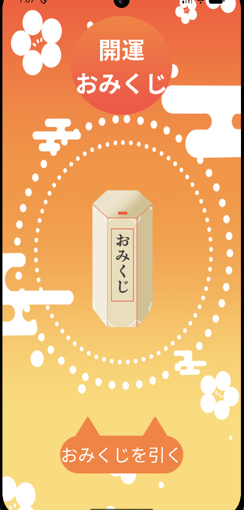
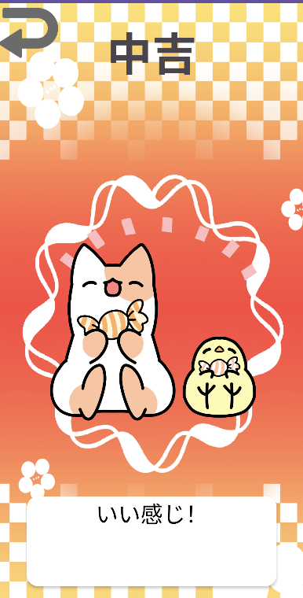

おみくじアプリ
おみくじを引いて遊べるAndroidアプリケーション。
アプリについて
言語：kotlin,Java
開発環境：Android Studio
制作期間：各5時間
おみくじ画面

結果画面
結果がランダムに表示されます。
制作の経緯
- 制作理由 -
初めて作成した Androidアプリです。
- 制作の流れ -
初めにkotlin版で全体の構成や記述内容を指導していただき、その後Javaで自分で調べながら作成しました。
- 工夫した点 -
乱数を用いて結果画面を分岐させています。
感想
アプリの基本である画面の移動や結果分岐を自分で実装できたことがとても嬉しかったです。